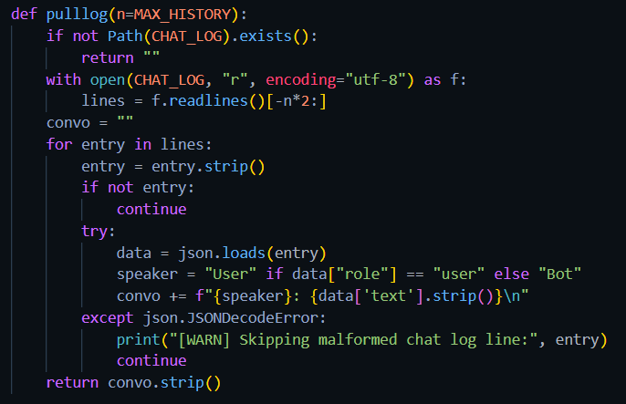
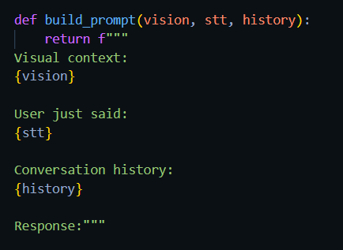
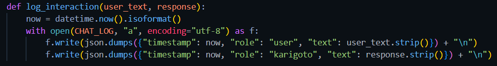

Retrieval Augmented Generation
Right now my use of a RAG is certainly not the most complex design but it is all I needed
Right now I am simply pulling chat logs, data, and the input for the to respond to
Current implementation
The dataset is checked for new content

Previous chats are pulled to aid in context

All the data is formatted into a single prompt to sent to the

The user prompt and response are logged for future use